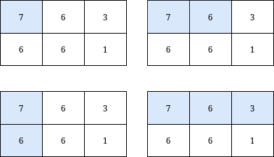
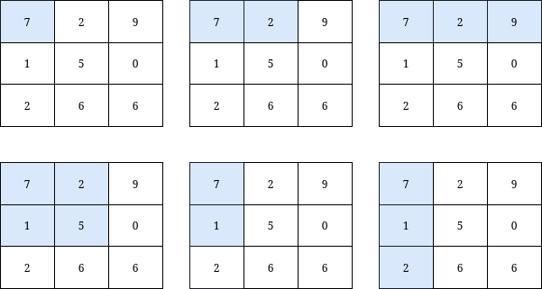

| Category | Difficulty | Likes | Dislikes |
|---|---|---|---|
| Algorithms | Medium | 161 | 5 |
array | matrix | prefix-sum
barclays
You are given a 0-indexed integer matrix grid and an integer k.
Return the number of submatrices that contain the top-left element of the grid, and have a sum less than or equal to k.
Example 1:

Input: grid = [[7,6,3],[6,6,1]], k = 18
Output: 4
Explanation: There are only 4 submatrices, shown in the image above, that contain the top-left element of grid, and have a sum less than or equal to 18.Example 2:

Input: grid = [[7,2,9],[1,5,0],[2,6,6]], k = 20
Output: 6
Explanation: There are only 6 submatrices, shown in the image above, that contain the top-left element of grid, and have a sum less than or equal to 20.
Constraints:
m == grid.length n == grid[i].length1 <= n, m <= 1000 0 <= grid[i][j] <= 10001 <= k <= 109